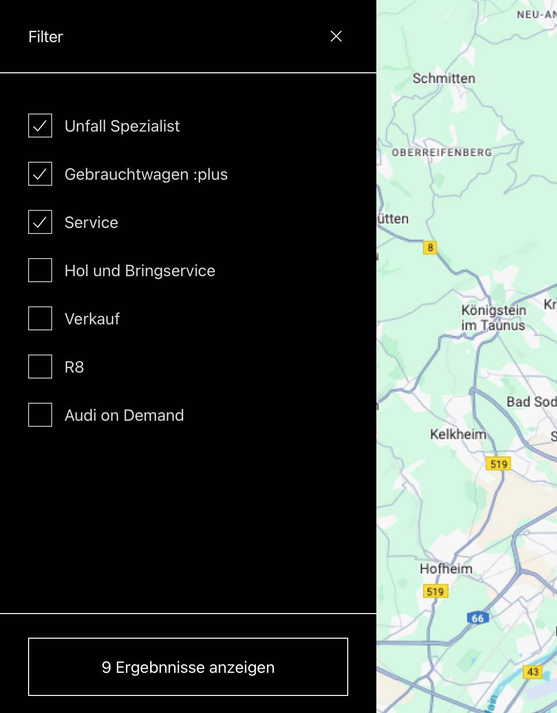

My Role
UI Design
Prototyping
Documentation
Tools
Sketch
Audi Design System
Miro
Year
2021 - 2022
Description
Driving Digital Transformation Strategy for the Audi Partner Portals.
Context
As part of Audi’s push for digital brand presence and transformation, I (together with a product team from Modus Create) were entrusted to work alongside Audi Business Innovation (ABI) to help revamp and launch specific feature apps across global partners.
The audi web platform is fully broken down into feature apps (or modules) that are controlled by the different teams. Me and my team were in full control of two feature apps.
I had the pleasure of working with Matthew for a couple of months on the Audi Business Innovation projects, and a few key qualities stood out. Matthew is a naturally curious Product Designer with a passion for UI/UX, new technologies, and digital products. He is a great teammate—reliable, responsible, and consistently delivering beyond expectations. He also has a strong ability to tackle even the toughest design and product challenges, solving them with ease. It was truly a pleasure working with Matthew at Modus Create, and I hope our paths cross again in the future.
Working with Matt is a pure pleasure. He is a real expert in his field. You can entrust him entirely with his part of the work. He always has new ideas of what can be improved. At the same time, he is very communicative, always willing to listen, and is open to feedback or suggestions. Above all of that, he is a great person overall.

Matthew has been a strong contributor to the Audi design team, working efficiently and fostering collaboration to refine ideas. He navigates ambiguity with ease, supports fellow designers, and elevates team efforts. His impact on Audi Business Innovation has been a revelation—I’d love to work with him again.